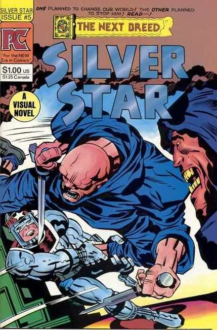
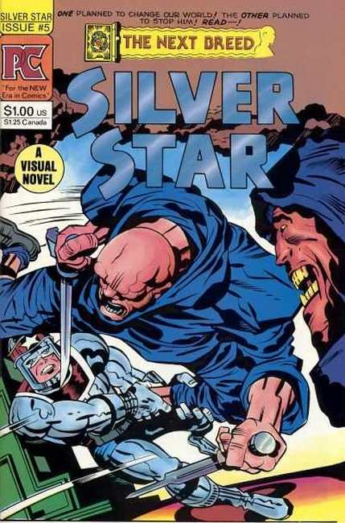

Silver Star is a comic book created, written, and drawn by Jack Kirby, originally published by Pacific Comics in 1983.
The concept for Silver Star began in the mid-1970s as a movie screenplay by Jack Kirby and Steve Sherman. The final comic series was based on the initial screenplay, with some revision made by Kirby.
The original Pacific Comics series ran from February 1983 to January 1984, lasting six issues. The series was launched following the success of Kirby's previous creator-owned book for Pacific, Captain Victory and the Galactic Rangers. Silver Star follows the exploits of government agent Morgan Miller, who, after being transformed into a genetic mutant ("Homo Geneticus") by his father Dr. Bradford Miller, was appointed the task of fighting other super powered beings. In the six-issue series Silver Star teams with fellow "Homo Geneticus" Norma Richmond (gifted with the ability to resist enormous stress) and Big Masai (a size changing mutant), and battles with the villainous Darius Drumm, an early subject of Dr. Bradford Miller's genetic structuring with the ability to warp reality.